After feedback, the major contraint that emerged for my fabircation process for the final few weeks was
figuring out how to create the body of the bottle. We decided that traditional waterbottle rigid bodies would
be difficult to fabricate with great resolution/detail through methods like thermoforming or 3d printing.
Eventually I decided to pursue a design that relied on a soft body, such as the bladder bags from camelbak. Not only would this
make the fabrication process potentially simplier, but it would also give me an opportunity to build upon my collapsability
idea from previous weeks.
The initial prototyping started with polyethelene sheets that were lying around the lab.
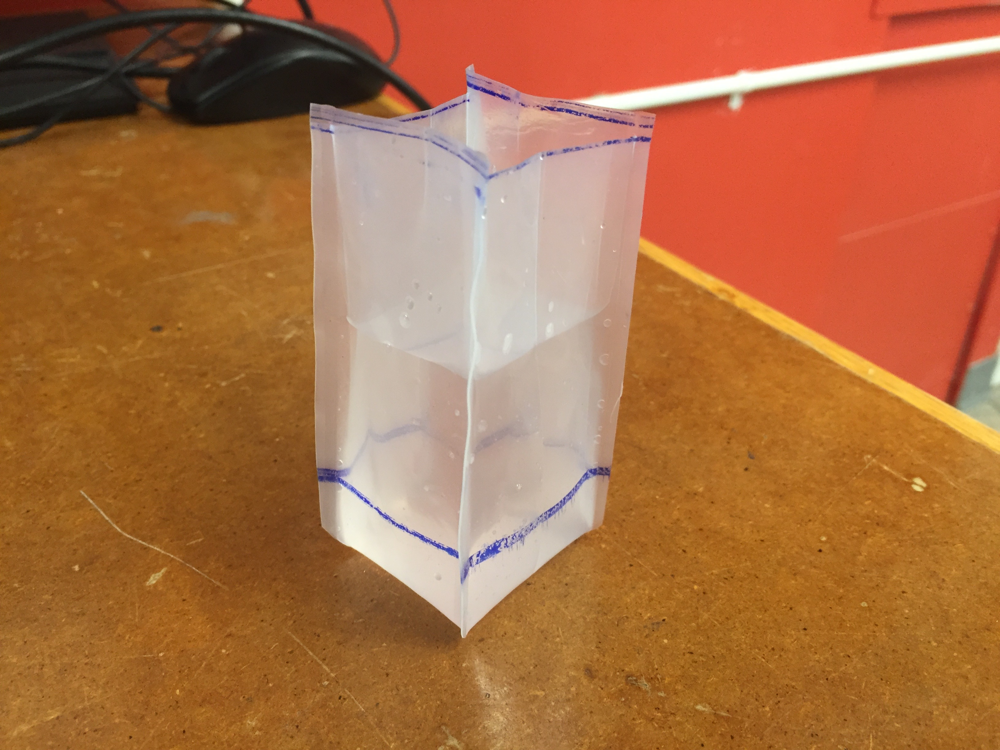
Polyethelene Designs
The first challenge was to figure out how to heat seal a 3d object with a traditional heat sealer or a heat press.
I relied primarily on the Japanese waterbomb design in fabricating the first model (shown above). The next interations
consisted of trying out various shapes and bases that could be formed with the heat sealer.
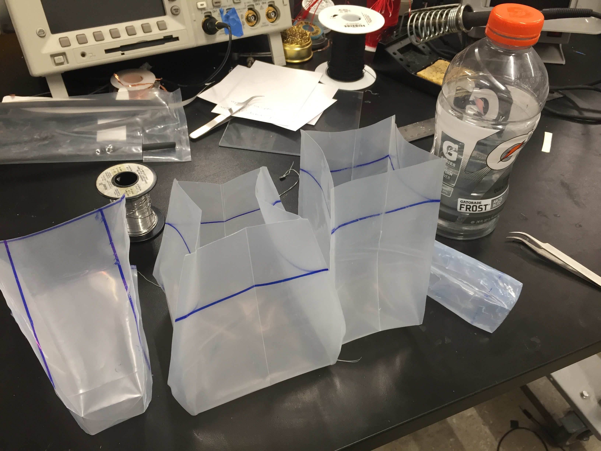
Polyethelene Designs
An issue with the polyethlene was that it was too rigid, and did not easily collapse in any organized form, though I could
roll it up. I also experimented with the polyethelene from ziploc bags, which were much more mallable, though also suffered from
wrinkling after collapse.
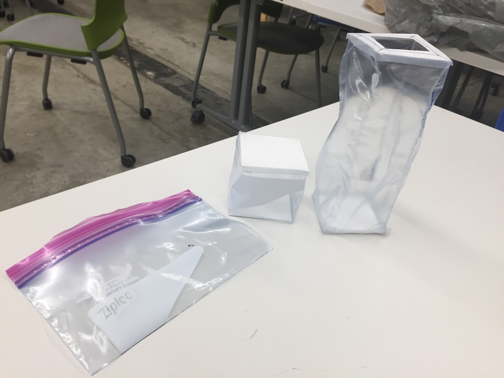
Ziploc Bag Construction
The first finished prototype used 3D printed parts and a neopixel ring in the bottle cap to form the top part of the bottle,
and used rigid polyethelene for the body. The material was transparent but looked cloudy/murky, and was not a very pretty material.
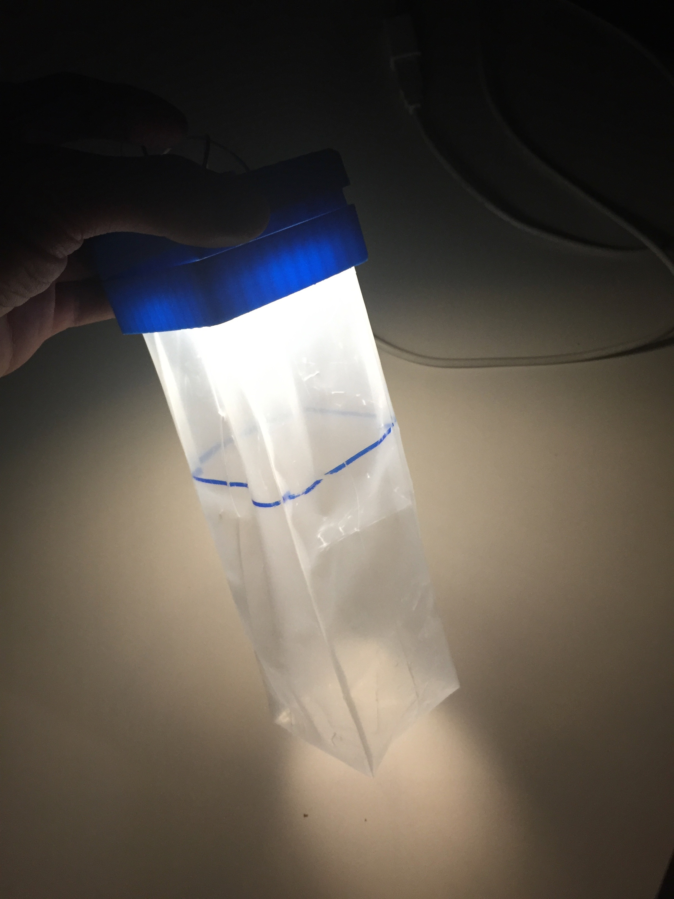
Finished Prototype 1
The second prototype used the ziploc bag material, which looked a lot better, but was still fairly flimsy.
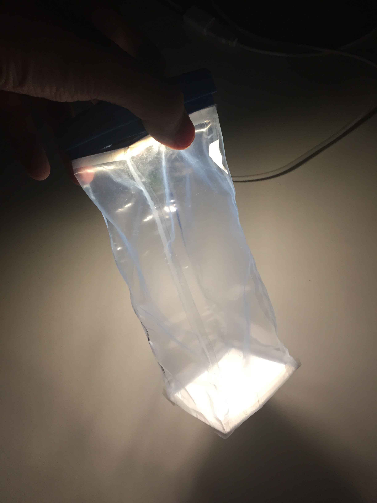
Finished Prototype 2
While experimenting with material, I tried different ways of collapsing the structure besides rolling the
bottle itself. One idea was starting with a simple geometric cube, and compressing the sides through folding along the diagonals.
Cube Construction w/ Polyethelene
To achieve a elongated bottle, I experimented with prototyping multiple cubes stacked on top of each other.
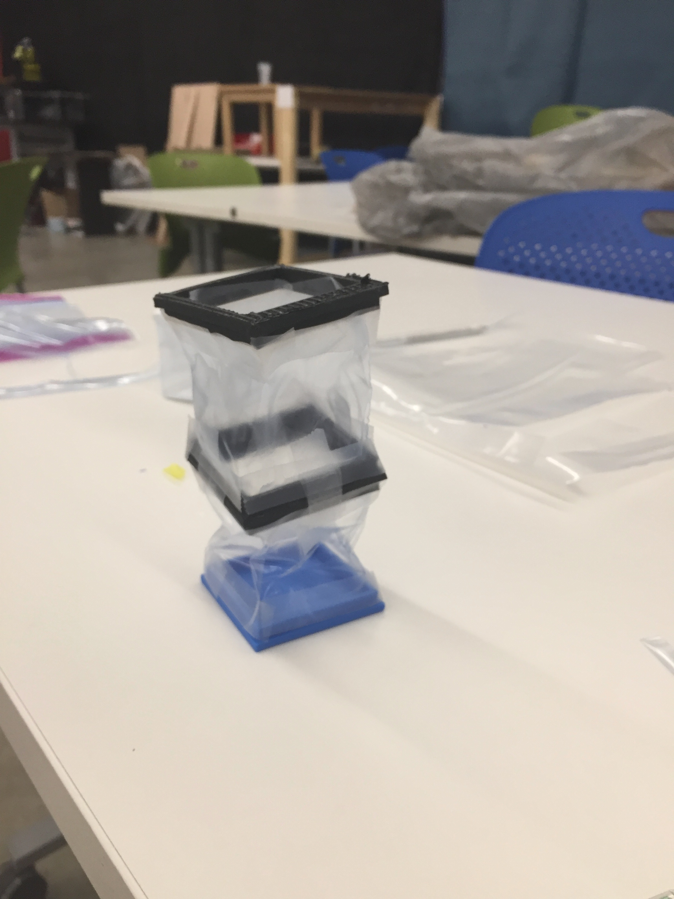
Cube Designs
Construction
I eventually settled on TPU (thermoplastic polyurethane), a class of plastics that were elastic, translucent,
resistant to many substances, and most importantly did not wrinkle after folding.
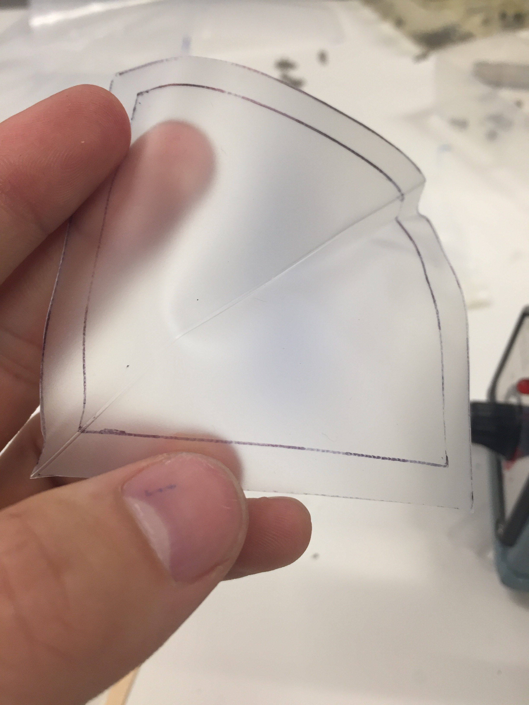
TPU
I decided to stick with the cube design and begain fabricating cubes along with their collapsing mechanisms.
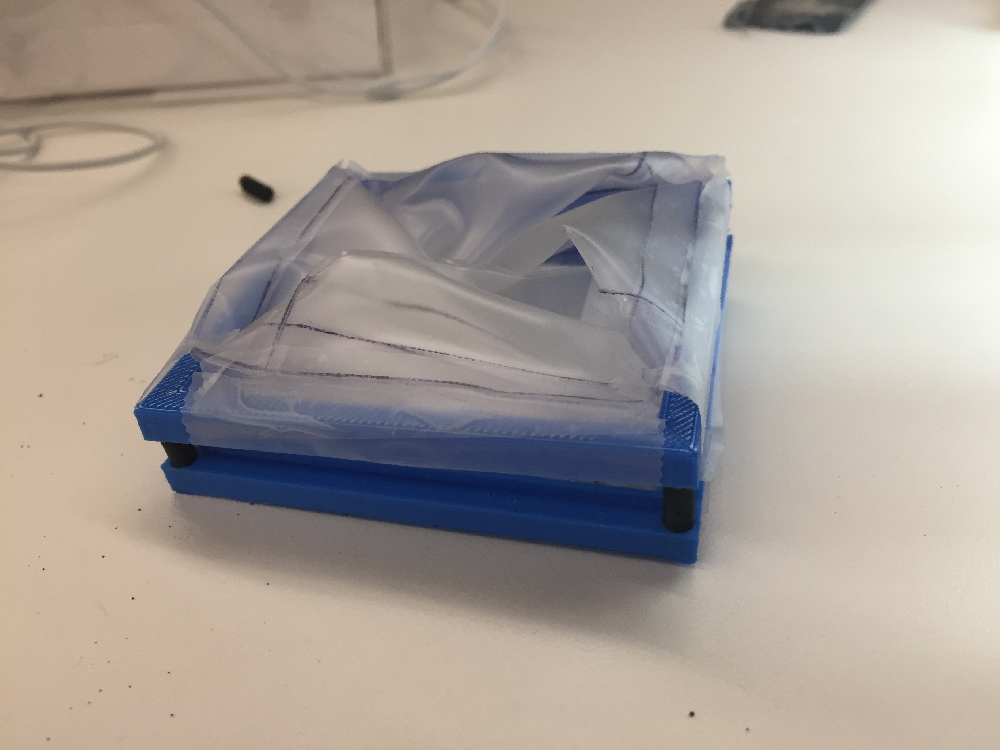
TPU Cube Collapse
I used clamps to help shape their creases.
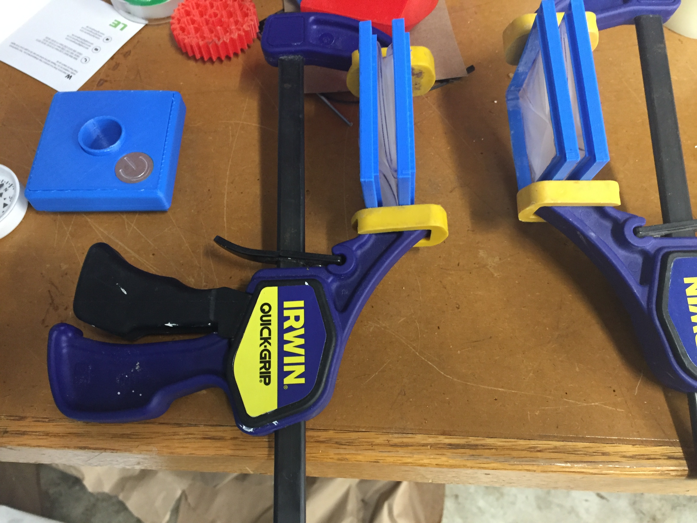
Clamping for creases
The final design would rely on two cubes stacked on top of each other with a hollow center, to allow for water flow
inbetween.
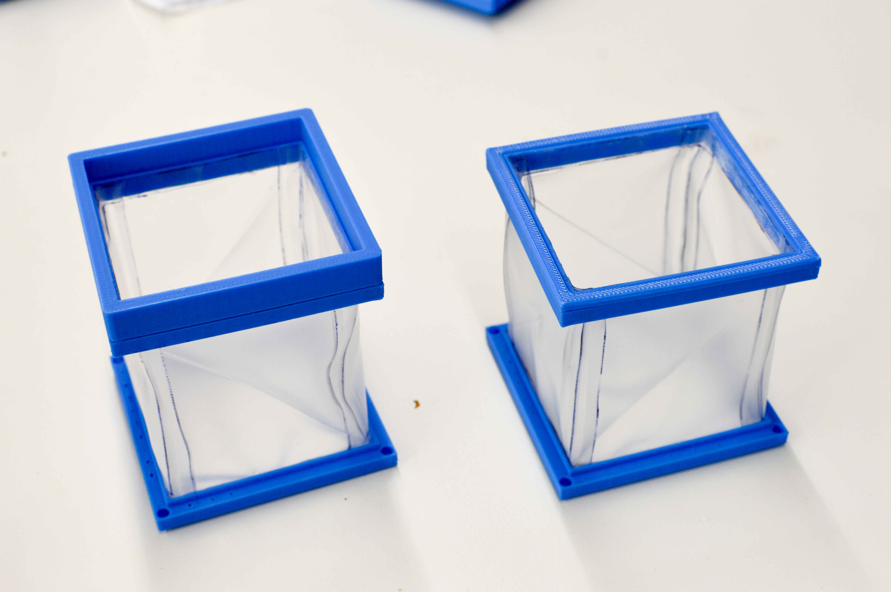
Final Cube Design
The cap was created from multiple 3D printed parts, stuffed with an arduino micro,
an etched aluminum button, 2 lipo batteries in series, and a neopixels LED ring.
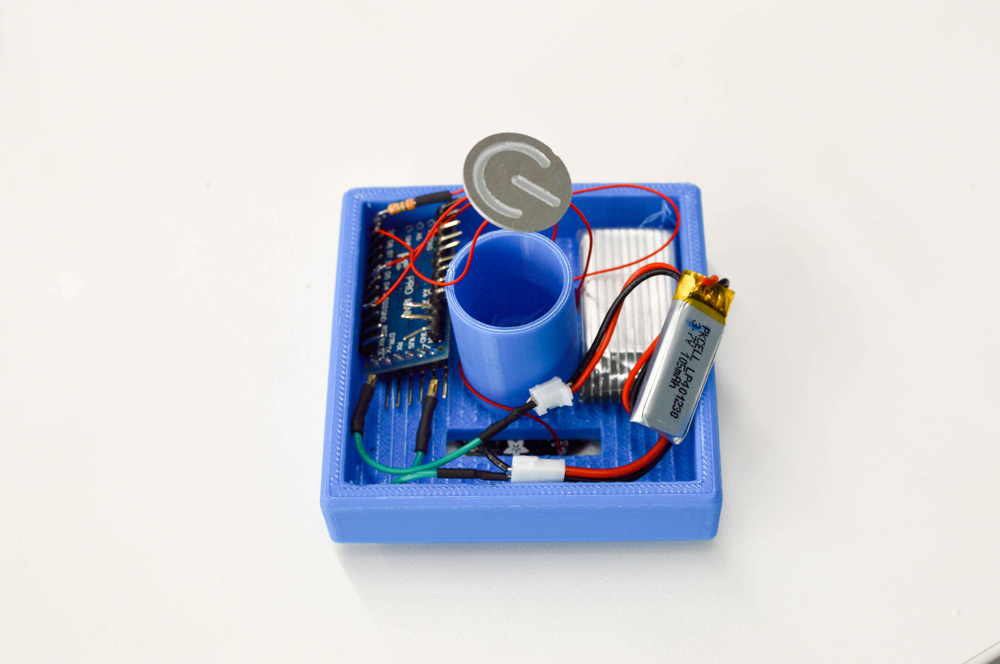
Electronics stuffed in cap
The base was created from a 3D printed part with a Seiko compass inserted.
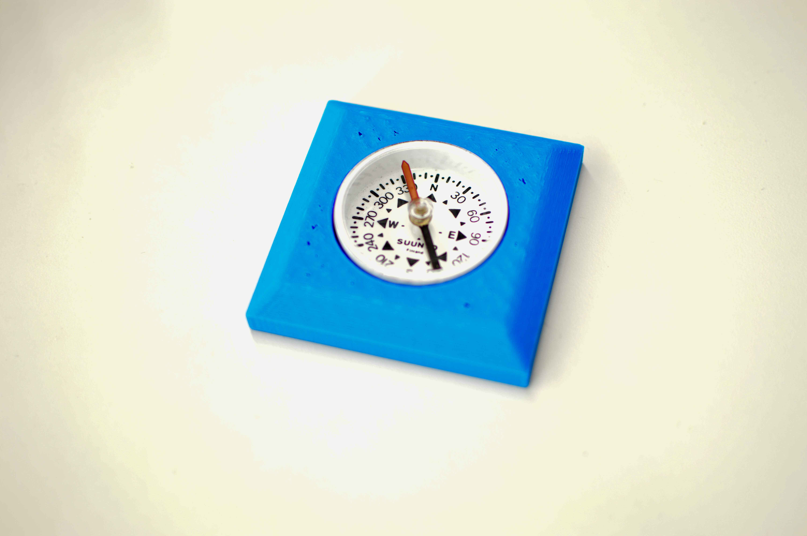
Compass Base
Neopixels RGB LEDS
Final Design
Due to the difficulty of iterating quickly through 3D prints, the entire model was built out of
close to a dozen modular parts, which allowed me to quickly test, fabricate, and swap out parts when necessary without having to
go through long sessions of printing.
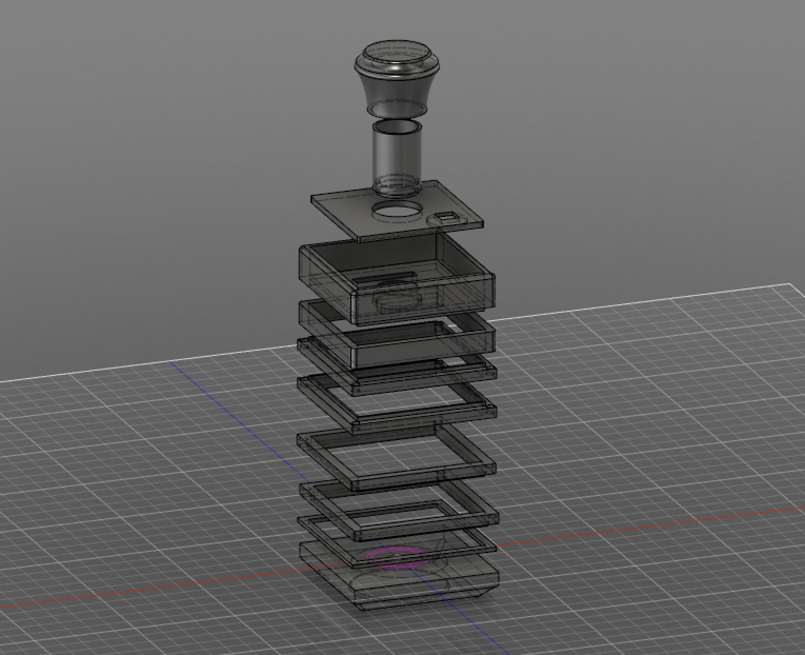
Fusion Model
The final product was glued together so it didn't manage to be watertight, but could be if filled further with silicon paste.
Bottle Inner Tube
Compass Base
The button relied on capacitive touch to activate.
Aluminum Etched Button w/ Capacitive Sensor